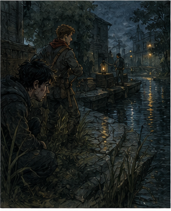
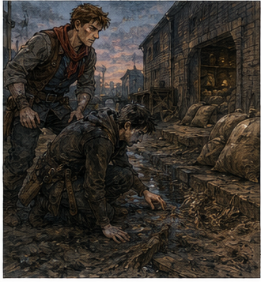
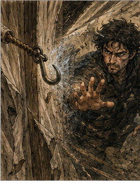

I read the contract.
Alden had not lied about it. This disappointed me slightly, because correcting him would have been satisfying.
The posting occupied half a sheet on the Bronze board beneath a request to clear mud wasps from a chimney and above a notice concerning a mule that had learned to bite only guild members. South Canal, Verran Grain Stores. Night intrusion on three occasions. Two sacks missing the first night, four the second, three the third. Rear boards damaged. Mud tracks near the canal wall. No watchman injured because no watchman had seen anything. Owner wanted the loss stopped and, if possible, the responsible party identified.
Two Bronze minimum. Eighteen copper each if human theft was confirmed and materially interrupted. Twelve if vermin or animal. Additional recovery payment at owner's discretion.
The important line was lower down.
Do not pursue onto canal after dark without licensed water support.

I read that twice.
The ink-thumbed clerk watched me from behind the counter.
"You planning to memorize it?" she asked.
"I am appreciating the sentence everyone else will ignore."
"Which one?"
I pointed.
She looked at the line, then at me. "That one exists because Bronze adventurers kept falling in."
"How many?"
"Enough to get a sentence."
Alden leaned against the counter beside me. "I read that part."
"Did you appreciate it?"
"Deeply."
The clerk snorted.
I looked over the rest again. "Any previous reports from the neighboring stores?"
"No confirmed theft. One owner says he heard scraping two nights ago. Another says Verran invented the whole thing to get the guild to subsidize a watchman."
"Does Verran have enemies?"
"He sells grain."
"So yes."
"Everyone has enemies if you ask enough questions," she said. "Bronze board, Greg."
I liked her more every time she told me to stop doing something.
Alden tapped the bottom of the posting. "Are you done?"
"Almost."
"You said that before you started reading the back."
"There was writing on the back."
"There were payment initials on the back."
"Which are writing."
He looked at the clerk. "Is he always like this?"
"I charge extra for opinions."
That was sensible.
I signed beneath Alden's name.
Jorren's space remained blank.
He had actual work, which I had initially interpreted as an inconvenience and then, after several minutes of thought, recognized as a life independent of mine. Progress remained humiliating.
Alden watched me notice the empty line.
"We only need two," he said.
"I know."
"You looked like you were counting missing furniture."
"Jorren is useful furniture."
"Tell him that."
"I intend to survive the week."
The clerk slid the posting copy toward us. "Verran expects you before dusk. If you damage his stock, he will attempt to deduct it from your pay. He cannot do that without arbitration, but he will attempt it with enthusiasm."
"Anything else?" I asked.
"Yes. Don't fall in the canal."
Alden picked up the paper. "We appreciate the sentence."
I hated him a little.
We reached South Canal while the sun was still above the roofs.

The district smelled like wet stone, old rope, fish, grain dust, horse piss, and money too practical to wash itself. Warehouses stood shoulder to shoulder along the canal, broad brick or timber structures with loading doors facing both street and water. Cranes leaned over the dark green canal at intervals. Barges moved slowly beneath them, pushed by poles or dragged from the towpath when the channel narrowed.
Verran Grain Stores occupied a long two-story building with a faded wheat sheaf painted over the street doors. The canal side sat on stone footings with a narrow loading ledge just above the water. Three high windows had shutters. One lower section of wall had newer boards among older gray ones.
A man was waiting outside with his arms folded.
He was perhaps forty-five, thick through the middle, with a trimmed beard and a coat too good for unloading grain but too dusty for a merchant who stayed behind a desk.
"Merek Verran," he said. His eyes went to Alden's red scarf, then to me. "You're the guild?"
"Unfortunately," Alden said.
Verran frowned.
I said, "Bronze contract for the night intrusion. Greg. Alden."
"You're young."
"The guild charges more for old people."
Alden looked at me.
Verran did not laugh. That was useful information.
"Come inside," he said.
The warehouse was larger than it looked from the street. Rows of stacked sacks formed aisles between timber posts. Wheat, barley, oats, rye. Some marked for mills, some for bakers, some with merchant stamps I recognized and some I didn't. The air was dry enough to itch the back of my throat.
A woman with a lantern was checking a tally board near the rear wall.
"Nella," Verran called. "Show them the damage."
She turned.
Nella was perhaps thirty, narrow-faced, sleeves rolled above strong forearms. She looked at us, then at Verran.
"You could show them."
"I have invoices."
"You always have invoices."
"That's why we still have a warehouse."
Nella set down the tally board. "Come on."
Alden smiled at me as we followed her.
"Don't," I whispered.
"I didn't say anything."
"Your face did."
At the canal wall, Nella crouched beside the newer boards.
"First morning, this one was cracked," she said, touching a vertical plank. "Second time, two were loose. We replaced them. Third time, somebody had worked the bottom nails out of the new boards."
I crouched beside her.
The boards were thick enough that rats were not the explanation unless the rats had acquired tools and labor organization. The bottom edges showed fresh scraping. The nails had been driven again, but one hole was enlarged.
"From which side?" I asked.
"That's the argument," Nella said.
Verran had followed us after all. "Outside."
Nella pointed at the inner face. "Some marks are here."
"Because they pushed the boards inward."
"Or because somebody inside loosened them."
Verran's mouth tightened. "Nobody inside is stealing from me."
That was not evidence.
I looked at Nella. "Who has keys?"
"Verran. Me. Night watch. Two senior loaders."
"Who was here on the three nights?"
"Different people."
Verran said, "Which is why it isn't my staff."
"Or why your staff is organized," Alden said.
Verran looked at him.
Alden looked back.
I had the sudden urge to see how long they would continue.
Nella saved us. "The missing sacks came from this section."
She led us twenty feet along the wall to a stack of barley.
Nine sacks over three nights. Not the nearest sacks to the damaged boards. Not the most expensive grain either.
I walked the route from the damaged wall to the stack.
Alden watched me.
"What?" I asked.
"You're doing the face."
"Which face?"
"The one where you're somewhere else."
"I'm here."
"Physically."
Nella looked between us. "Do you two know what you're doing?"
"One of us does," Alden said.
"Which one?"
"We're still testing."
I liked her immediately.
I crouched beside the lowest sacks. The floorboards were dusty. Grain dust, boot marks, drag lines from normal work. Nothing clean enough to become revelation because warehouses had the unfortunate habit of containing workers.
"How heavy?" I asked.
Nella answered without checking. "Barley sacks, about seventy pounds when full. These are a little under because Verran cheats the measure."
"I do not cheat the measure," Verran said.
"You round."
"Everyone rounds."
"Down."
Alden coughed into his fist.
I touched one sack.
Heavy enough that one person could carry it. Awkward enough that nine sacks meant repeated trips or some way to move them without crossing much floor.
"Any spilled grain outside?"
"A little on the ledge after the second night," Nella said.
"Tracks?"
"Mud. One clear boot. Maybe another. Water smeared most of it."
"Boat?"
Verran said, "Obviously."
"Then why does the contract say tracks near the canal wall instead of boat?"
He opened his mouth.
Nella answered. "Nobody saw one."
Good.
Alden walked back to the damaged boards and pressed his palm against one.
"If they come from outside, they have to open this quietly, climb in, cross to the sacks, carry them back, climb out, close enough of it that the watch doesn't notice until morning."
"Yes," I said.
He looked toward the stacked barley.
"Why not take the sacks nearest the wall?"
Better.
"Exactly."
Alden smiled.
I disliked how pleased that made me.
Verran folded his arms. "So what does that mean?"
"Nothing yet," I said.
Alden said, "It means whoever is doing it wants those sacks."
I looked at him.
He shrugged. "Or somebody inside hands them over."
Also possible.
Nella asked, "What do you want us to do?"
That was the actual question.
I looked at the warehouse, the doors, the rear boards, the windows, the canal ledge. My mind immediately offered twelve arrangements. Hide among sacks. Roof observation. Outside watch. Flour on floor. Thread on boards. Mark sacks. Move target grain. Put one of us inside and one outside. Ask neighboring warehouse for roof access. Borrow a boat. Do not borrow a boat because sentence.
Alden waited.
I noticed him waiting.
Yesterday he would have filled the silence.
Maybe.
Or maybe I was already inventing a version of him that improved on schedule because I wanted the story to be satisfying.
Annoying thought.
I cut the list.
"We stay inside," I said. "Leave the warehouse looking normal. Don't change the stack. Don't add an obvious trap. Nella, can the night watch stay on his usual route?"
"Her," Nella said. "Sima tonight."
"Can Sima stay on her usual route and not come in here unless there's a fire?"
"Probably."
Verran frowned. "Why?"
"Because if whoever is stealing knows the watch pattern, changing it tells them tonight is different."
Alden nodded. "And if it's someone inside?"
"Then they already know we're here unless Verran kept his mouth shut."
Everyone looked at Verran.
He looked offended.
Nella said, "He didn't."
Of course.
"Then we assume the thieves may know guild adventurers are present," I said. "Which means they either skip tonight, change method, or think Bronze means manageable."
Alden's grin appeared.
"Don't enjoy that," I said.
"I didn't say anything."
"Your face did."
Nella looked at me. "You two really do that?"
"Apparently."
We ate before dark because fighting hungry is stupid and waiting hungry is worse.
Verran provided bread, hard cheese, and an apple each after Nella reminded him that the contract required reasonable access to water and facilities during overnight work. He disputed whether food counted as a facility. Nella gave us the bread anyway.
Alden ate sitting on a grain sack despite three available stools.
"So," he said, "what do I do tonight?"
"Your job."
"Helpful."
"You wanted training. This is better training than me narrating your shoulders."
He took a bite of apple. "You're going to narrate my shoulders anyway."
"Only if they become interesting."
"They're excellent shoulders."
"Historically significant."
The words escaped before I could stop them.
Alden's chewing slowed.
Fuck.
Not because the phrase revealed anything. People said historically significant about buildings, arguments, hangovers, and occasionally shoulders if they were sufficiently pleased with themselves.
But I had heard the second meaning.
Alden swallowed. "You really are strange."
"I've been told."
"By who?"
"Everyone with sustained exposure."
He accepted that.
We settled behind a row of wheat sacks with sightlines toward the damaged wall and the barley stack. I disliked hiding behind grain because grain burned, collapsed, spilled, attracted vermin, and had no respect for tactical dignity. Alden disliked it because there was nothing to do.
For the first hour, he whispered twice.
For the second, once.
By the third, he had become personally offended by darkness.
"This is adventuring?" he murmured.
"Mostly."
"No."
"Yes."
"People tell stories wrong."
"Almost always."
He shifted his weight.
I touched his boot with mine.
"Stop."
"My leg's asleep."
"Then it is finally contributing."
He stared at me in the dark.
I could barely see his expression, but I felt the insult.
Somewhere near the street side, a board creaked.
Alden went still.
We listened.
Nothing.
A rat appeared at the end of the aisle, paused, and looked directly at us.
Alden's hand moved toward his sword.
I caught his wrist.
He looked at me.
I looked at the rat.
The rat washed its face.
Alden slowly lowered his hand.
I leaned close enough to whisper, "Excellent threat assessment."
"It surprised me."
"It weighs eight ounces."
"Could be magical."
"Then we're underpaid."
The rat left.
Alden waited several breaths before whispering, "You don't know how much that rat weighed."
"Closer than you."
Another hour passed.
Then I heard scraping.
Not from the damaged boards.
Below us.
I frowned.
Alden heard it too. His head turned toward the canal wall.
Scrape.
Pause.
Scrape.
Wood against wood, low and controlled.
The bottom edge of the wall shifted.
Not the replaced boards.
Three feet to the left, an older plank moved inward less than an inch.
Alden started to rise.
Then stopped.
His weight settled back.
I looked at him.
He did not look at me.
Good.
The plank moved again.
A thin iron hook slid through the gap.

It lay flat against the floor.
A rope followed.
No person entered.
The hook disappeared beneath the nearest stack, moving slowly along the floor as somebody outside manipulated it.
Not toward the barley.
Past it.
I watched the rope angle change.
The hook snagged something behind the stack.
A soft thump.
Then another.
Alden leaned close.
"They're pulling them."
"Yes."
"From outside."
"Yes."
"Then how do they choose the sacks?"
That was the question.
The rope tightened.
A sack shifted behind the barley stack and slid into view.
Not barley.
A smaller sack, dark canvas, maybe forty pounds.
Nella had not shown us that.
The sack scraped toward the wall.
Alden looked at me.
I could see the decision forming in him.
Go now.
Catch the hand on the hook.
Seize initiative.
Spend it.
He stayed still.
The sack reached the wall.
The plank opened wider.
A hand appeared.
Then an arm.
Then the sack was dragged through the gap and vanished.
Alden's jaw tightened.
He hated waiting.
So did I.
The rope returned.
Second pass.
This time the hook traveled to the same place.
Another dark sack shifted.
I counted the grain stacks between us and the wall. Too much obstruction for a clean rush. Alden could reach the opening faster than I could. Current Greg could not rely on old speed. Fine.
We did not need old speed.
We needed to know how many.
The second sack vanished.
Voices outside, too low to distinguish.
At least two.
Maybe three.
The hook returned a third time.
Alden breathed through his nose.
I almost smiled.
Yesterday, he would have spent the advantage.
Today, he was holding it so hard it hurt.
The third sack began to move.
Then something changed outside.
A whisper, sharper.
The rope stopped.
Alden's eyes flicked toward me.
They knew.
Maybe a sound. Maybe Sima's route. Maybe one of them had seen movement through a crack.
The rope jerked backward.
"Now," I whispered.
Alden moved.
He did not charge the wall.
That surprised me.
He sprinted down the aisle toward the rear loading door.
Good.
Very good.
I went the other direction because my body could not beat him to the same place and duplicating a faster man is an excellent way to become decorative.
The hook snapped free of the sack.
Outside, wood banged.
I reached the damaged wall as the old plank was pulled outward.
A face appeared in the gap.
Young man. Wet hair. Wide eyes.
He saw me.
"Shit."
"Accurate."
He shoved the plank back.
I drove my shoulder into it.
Old Greg would have reinforced the impact through hip, knee, Barrier brace, and a tiny force layer at the contact point.
Current Greg had a shoulder.
The plank hit me back hard enough to make my teeth click.
I swore.
The gap opened anyway.
A hand came through holding the iron hook like a weapon.
He thrust blindly.
Too fast for my shoulder.
Slow enough for my mind.
Barrier.
Small.
Not stop.
Angle.
I gathered mana.
The pathway felt thin and unpleasantly bright inside my skull. I shaped the smallest plane I could manage, not in front of me, but beside the hook's path.
The hook struck it.
For less than a heartbeat, the Barrier existed.
The iron point kicked sideways.
Instead of catching my cheek, it tore my sleeve.
Pain flashed behind my eyes.
The Barrier vanished.
I grabbed the shaft with both hands.
"Mine," I said.
The thief pulled.
I pulled back.
This was not sophisticated magic.
This was two idiots fighting over a hook through a wall.
I had missed this profession.
Outside, someone shouted.
Alden.
Then a crash.
The hook went slack.
I yanked it through the gap and dropped it.
The plank opened.
The wet-haired man tried to squeeze through backward, apparently deciding the warehouse was safer than whatever Alden was doing outside.
I helped him make that decision by grabbing his collar and pulling.
He came through badly, hit the floor, rolled, and kicked me in the thigh.
My leg folded.
I fell on him.
This was not part of any formal technique I remembered.
It worked.
He punched me in the ear.
I punched him in the mouth.
That also worked, though less elegantly.
He twisted under me.
I felt the old answer arrive.
Pin wrist. Reinforce elbow. Barrier at shoulder. Shift weight. Lock hip.
No.
One thing.
I trapped his right wrist against the floor with both hands and put my knee on his forearm.
Ugly.
Current.
He bucked.
I stayed on him.
"Stop," I said.
"Fuck you."
"Also current."
Footsteps hammered through the warehouse.
Alden appeared at the aisle entrance dragging another man by the back of his coat.
His red scarf was gone.
He had blood on one knuckle and an expression of enormous satisfaction.
"Got one."
"So did I."
The man under me tried to throw me off.
I nearly lost him.
Alden looked at the situation.
"Do you?"
"Help."
He laughed and did.
We tied both men with warehouse cord.
Nella arrived carrying a short cudgel and a lantern. Sima, the night watchwoman, came behind her with a crossbow held low but ready.
Verran appeared last, because owners often arrived at exactly the point where other people had made the danger manageable.
"Where are the sacks?" he demanded.
Nella looked at the bound men.
"Good evening to you too."
Alden wiped his knuckle on his trousers. "Two went outside. Third is there."
He pointed.
The dark sack sat halfway between the hidden stack and the wall.
Verran stared at it.
Then his face changed.
Interesting.
Nella saw it too.
"That's not grain," she said.
Nobody moved for a moment.
I looked at Verran.
"What is it?"
"Nothing relevant to your contract."
Alden laughed once.
Not humor.
"They broke into your grain warehouse three nights to steal the thing that's not relevant?"
Verran's jaw tightened.
Nella walked to the sack.
"Don't," Verran said.
She stopped.
That was the first time all evening he had said something and she obeyed immediately.
Interesting again.
The wet-haired thief on the floor smiled through a split lip.
"Tell them."
Verran looked at him.
"Shut up."
The thief smiled wider.
I suddenly cared much less about the canal.
That was dangerous.
The contract.
Identify and materially interrupt the intrusion.
We had two thieves.
At least one more outside.
Two sacks already removed.
The guild specifically prohibited canal pursuit without licensed water support.
I looked at Alden.
He was already looking toward the loading door.
Outside, a pole knocked against stone.
A boat pushing away.
His weight shifted.
Here it was.
The next move.
He could run.
He could chase.
He could try to jump onto a departing skiff from a dark canal ledge because he was twenty-one and fast and had recently discovered that success felt good.
I did not say anything.
Alden looked toward the door.
Then at the two bound men.
Then at the sack.
He exhaled.
"Fuck."
He stayed.
Something inside me lit up. Not pride. Ownership trying to disguise itself as pride.
I looked away before I could enjoy it too cleanly.
Sima went to the canal door and peered through a narrow viewing slit.
"Skiff," she said. "Three people maybe. Heading east."
Alden asked, "Can you identify it?"
"Dark hull. Short mast down. No lamp. Half the canal owns one."
"Then they're gone," he said.
The sentence cost him something.
Good.
Also not mine.
Nella crouched beside the dark sack without touching it.
"Verran."
He rubbed a hand over his beard.
"It's seed grain."
The thief laughed.
Nella looked at him. "No, it isn't."
Verran's eyes closed briefly.
Alden looked at me.
I did not know, and for once that felt useful.
"Open it," Nella said.
"No."
"They've stolen two already."
"Which is why we do not open the third in a room full of idiots."
I raised a finger. "That is the first persuasive thing you've said."
Alden frowned. "What do you think is in it?"
"If I knew, I would be less interested in not opening it."
Verran looked at me sharply.
There.
Fear.
Not of thieves.
Of contents.
I stood slowly. My head still pulsed from the Barrier. My ear hurt. My thigh hurt. My shoulder would become an argument tomorrow.
I felt excellent.
That was probably a warning.
"We don't open it," I said.
Nella's mouth tightened. "Why?"
"Because Verran is scared of it, and I don't know whether he's scared of losing money, getting arrested, being poisoned, being exploded, or having to explain himself. Those are different problems."
Alden looked at Verran. "Which one?"
Verran said nothing.
The wet-haired thief said, "Ask him where he got it."
Verran kicked him.
Not hard enough to injure seriously.
Hard enough to make the room change.
Alden moved before I did.
He caught Verran by the front of his coat and shoved him back against a post.
"Don't," Alden said.
Quietly.
Verran stared at him.
Alden had the advantage.
I watched his shoulders.
They stayed down.
He did not hit him.
He did not spend it.
Good.
Then Alden looked at me.
"What now?"
That question felt different than it had in the yard.
Not obedience.
Not deference.
He had acted. He had established the immediate boundary. Now he wanted the next useful piece.
I looked at the sack.
At Verran.
At Nella.
At the thieves.
At the canal wall.
I could feel my mind trying to turn the room into a larger machine.
Where did the sacks come from? Who wanted them? Why steal only three at a time? Why use a grain warehouse as cover? Was Verran moving something illicit? Dangerous? Valuable? Was the theft targeted recovery rather than theft? Were the thieves employees of whoever originally owned it? Was this guild contract being used to provide armed security for contraband?
Seventeen reasons.
Maybe more.
I breathed.
Actual job.
"We secure the prisoners," I said. "We send Sima for the city watch and the guild clerk. We do not open the sack. We do not let Verran move it. We write down exactly what happened before everybody has time to improve their story."
Verran said, "You work for me."
"No," I said. "You purchased a guild contract. Different relationship."
Nella smiled.
Alden released Verran.
"I like that distinction."
"Of course you do."
Sima left through the street door.
We waited.
The wet-haired thief gave his name as Ors. The other refused his. Ors claimed Verran had stolen the sacks first. Verran claimed Ors was a canal thief and liar. Nella claimed Verran was a cheap bastard but had never previously stored anything she wasn't allowed to inventory.
That last part interested me most.
"You didn't know these were here?" I asked.
"No."
"How many?"
She counted the hidden stack with her eyes. "Five left, if those are all of them. Eight before tonight."
Three nights of theft.
Two. Four. Three grain sacks reported missing.
But the thieves had taken something else.
I looked at Verran.
"Did any grain actually disappear?"
He said nothing.
Nella's face went flat.
"Merek."
He looked at her.
That relationship had history I did not own.
Good.
"I needed the guild here," he said.
Alden laughed in disbelief.
I did not.
It made too much sense.
"You invented the grain losses," I said.
"I lost property."
"Property you didn't want described on a guild posting."
"Correct."
"So you lied about grain."
"I simplified."
I stared at him.
Somewhere, Antonius would have appreciated the audacity and despised the execution.
Nella looked like she might murder him before the thieves got another chance.
"You made me recount barley for three mornings," she said.
Verran had the good sense to look more frightened of her than of us.
Alden turned to me. "Does that change our pay?"
I looked at him.
He shrugged. "Important question."
It was.
"Probably upward if the clerk is in a good mood."
"Does she have those?"
"We'll discover something tonight."
The city watch arrived first, two officers with leather coats and the exhausted expressions of people who had been promised a grain theft and received a room full of lies.
The guild clerk arrived ten minutes later.
She walked in, looked at the bound thieves, the damaged wall, Verran, the dark sack, Alden's bloody knuckle, my torn sleeve, and Nella's face.
Then she looked at me.
"You read the contract."
"I did."
"And somehow this still happened."
"The contract was misleading."
She looked at Verran.
"Was it?"
He began explaining.
She held up one ink-stained finger.
"Stop."
He stopped.
I loved competence.
The clerk took statements separately.
Mine first.
Then Alden's.
Then Nella's.
Then Verran's.
Then the prisoners after the watch formally took custody.
She did not open the sack.
She did not let Verran move it.
She sent a runner for a licensed appraiser and another guild officer with authority above Bronze contracts.
I watched the process and felt something settle pleasantly in my chest. I had not solved it. I did not have to.
That was new enough to be suspicious.
Alden stood beside me near the street door.
"You knew she'd do that?" he asked.
"No."
"You looked smug."
"I predicted competence."
"That's knowing."
"No. It's betting on a process."
He considered that.
"You really like processes."
"They complain less than people."
"People are more fun."
I looked at him.
He grinned.
There was probably a song about that grin somewhere in my damaged future memory.
I got nothing.
Good.
The clerk eventually came over with her ledger.
"Human theft confirmed," she said. "Eighteen copper each. Verran's false material description creates a contract violation. Additional six copper hazard and misrepresentation adjustment."
Alden's eyebrows rose.
"Twenty-four?"
"Each."
"I like arbitration."
"You haven't experienced arbitration."
"I like the threat of arbitration."
She ignored him and looked at me. "You used magic?"
I touched the torn sleeve.
"Tiny Barrier. Redirected a hook."
"Injury?"
"Pride. Ear. Shoulder. Thigh. Mostly pride."
"He punched you?" Alden asked.
"You were outside."
"I thought you had him."
"I did eventually."
The clerk made a note. "Get the ear looked at if you start hearing bells."
My stomach dropped.
For one stupid second, the warehouse disappeared.
A bell cracking.
A red scarf dark with something that was not shadow.
Voices singing too loudly.
...last bell broke...
Then grain dust, lantern light, Alden beside me.
Present.
The clerk was still writing.
Alden was watching me.
"What?" he asked.
"Nothing."
He did not believe me.
He also did not ask again.
Interesting.
Outside, the canal had gone almost black. Lamps reflected in broken lines across the water. A barge moved somewhere farther east, its pole tapping stone.
Alden rolled two copper pieces across his knuckles while we walked back toward the guild district.
"You were right," he said.
"I usually am."
"About waiting."
I looked at him.
He kept his eyes on the street.
"We got two because we waited," he said. "Would've gotten one if I'd moved on the first sack. Maybe none."
There it was. My mind assembled the lesson automatically.
I could name the principle, strengthen it, give him a rule to carry into the next fight.
I stopped.
"Yes," I said.
Alden looked at me.
"That's it?"
"That's it."
"No speech?"
"Do you need one?"
He thought.
"No."
"Then I'm saving us both time."
He nodded slowly.
We walked another half block.
"You waited too," he said.
"I am very disciplined."
"You fought a man through a wall over a hook."
"After waiting."
Alden laughed.
I laughed too.
My head hurt. My ear rang faintly. I had twenty-four copper coming, a torn sleeve, two new bruises, and no idea what Verran had been hiding in those sacks.
Alden had taken one correction into the field and used it when I was not beside him telling him what to do.
That satisfied me. Too much.
I looked at him and saw present possibilities: footwork, patience, command, the way he asked questions after acting, the way people looked at him when he made a decision, the way he had stopped himself at the canal door.
I could do a great deal with that. There I was again.
Alden tossed one copper into the air and caught it.
"Tomorrow?"
"What about tomorrow?"
"Training."
"With Jorren?"
"If he'll come."
"He has a life."
Alden looked genuinely surprised.
"Does he?"
"Apparently. I found out recently."
"Shame."
We reached the corner where our routes split.
Alden started left, then stopped.
"Greg."
"What?"
"You did the face again when she said bells."
The street felt colder.
I could lie.
Harmless Greg had several options.
Old Greg had better ones.
I was tired.
"I know," I said.
Alden waited.
I did not explain.
After a moment, he nodded.
"Fine."
Then he walked away.
No demand.
No clever trap.
No insistence that I owed him the answer because we had bled in the same warehouse.
That bothered me more than pressure would have.
I stood there until his red scarf disappeared into the evening crowd.
Then I realized something else.
He had asked for training tomorrow.
Not another contract.
Not money.
Not a favor.
Training.
I had wanted someone who could do things I couldn't yet.
Apparently he wanted something from me too.
That was fair.
Fair was not the same as safe.
I turned toward home.
Behind me, somewhere across the city, a bell marked the hour.
I did not remember the song.
I let it ring anyway.